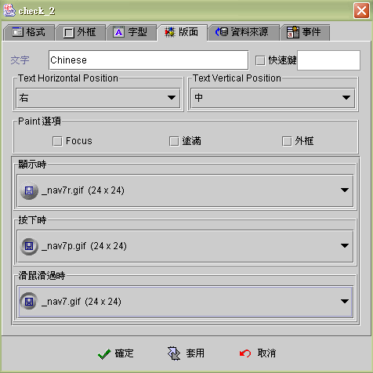
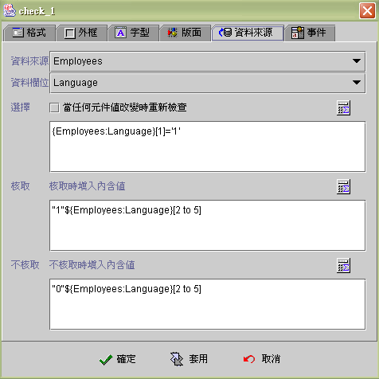
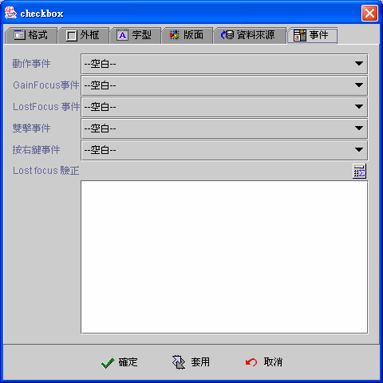

|

核取方塊 (Checkbox component)
共同屬性 (common properties)
版面 (face)
資料來源 (data source)
事件 (event)
運算式屬性存取
(formula get/set properties)
核取方塊
(Checkbox component)，是以核取條件運算公式 (formula) 的結果值 (0 或
空字串為偽 FALSE，否則為真 TRUE)，判斷核取方塊的核取與不核取
(checked or unchecked)，並根據核取狀態 (checked state)
，分別以核取 (checked) 或不核取 (unchecked)
的運算式結果值為元件內含值。如果核取方塊連結 (binding)
資料欄位(data field)，當資料來源 (data Source) 編輯存檔 (save)
時，將以此元件內含值填入資料欄位 (data field)。設計師以運算公式
(formula) 取值 {核取元件名稱} 時，系統亦回覆此內含值。
核取方塊可以不連結任何資料欄位，如果配合當任何元件值改變時重新檢查
的屬性，可以隨時以核取條件運算公式 (formula)
的結果值，檢視核取狀態 (checked state)，並根據核取狀態，取得核取與不核取的運算式結果值。
亦可以利用多個核取方塊 (Checkbox component)
連結同一資料欄位，每個核取方塊檢驗資料欄位相關的字元，做為資料欄位複選之介面。請參考 Appendix 資料說明。
版面 (face)
-
文字 (text)：核取方塊的說明文字。
-
易記鍵
(mnemonic)：定義易記鍵，先核選使用，再按住
"ALT" 鍵，接著按下所要的易記鍵。應用程式執行時，使用者按住
"ALT" 鍵+易記鍵，等於以滑鼠按選 (clicked) 核取元件
(Checkbox)。
-
水平 (text horizontal position)：文字與核取圖示
(icon) 的水平相對位置。
-
垂直 (text vertical position)：文字與核取圖示
(icon) 的水平相對位置為中 (center) 時， 文字與核取圖示 (icon)
的垂直相對位置。
-
Paint 選項：以下屬性必須元件的屬性為不透明
(opaque) 時才有作用。
-
Focus (paint focus)：當元件擁有
Focus 時 (focus owner)，在文字上顯示 Focus 框線。
-
塗滿 (paint fill)：當使用者以滑鼠或按鍵按下核取方塊時，元件以預設塗滿顏色為背景顏色，滑鼠放開
(release) 時，恢復為原設定背景顏色。
-
外框 (paint border)：顯示核取方塊外框。
-
不核取圖示 (unchecked icon)：核取方塊的不核取
(unchecked) 狀態的顯示圖示 (icon)。
-
核取圖示 (checked icon)：核取方塊的核取
(checked) 狀態的顯示圖示 (icon)。
-
滑鼠滑過時 (roll over icon)：當滑鼠移到核取方塊上，核取方塊是不核取
(unchecked) 狀態時會改變為此圖示。

▲Top
資料來源 (data source)
-
資料來源 (data source)：選擇資料來源。
-
資料欄位 (data field)：從資料來源中選擇資料欄位。
-
核取條件
(checked condition)：核取方塊判斷是否標示為核取的條件運算公式
(formula)。如果選用 當任何元件值改變時重新檢查
的屬性， 核取方塊會因為其他元件內含值改變 (changed)
或資料來源移動(move)、存檔 (save) 或刪除 (delete)
時，隨時根據核取條件(checked condition)
改變核取方塊的核取狀態 (checked status)。
-
核取 (checked)：核取方塊為核取 (checked)
時，以核取運算公式 (formula)
的結果值為元件內含值，如果核取元件連結 (binding) 資料欄位
(data field) ，當資料來源 (data source) 編輯存檔 (save)
時，將以此內含值填入資料欄位 (data field)。設計師以運算公式
(formula) 取值 {核取元件名稱} 時，系統亦回覆此內含值。
-
不核取 (unchecked)：核取方塊為不核取
(unchecked)
時，以不核取運算公式 (formula)
的結果值為元件內含值，如果核取元件連結 (binding) 資料欄位
(data field) ，當資料來源編輯存檔 (save)
時，將以此內含值填入資料欄位 (data
field)。設計師以運算公式 (formula) 取值 {核取元件名稱}
時，系統亦回覆此內含值。

▲Top
事件 (event)
-
動作事件 (action event)：使用者按選
(check or uncheck) 核取方塊時，即引發事件 (fire event)。
-
Gain
Focus 事件：當 Focus 移入核取方塊時，即引發事件 。
-
Lost
Focus 事件：當 Focus 移出核取方塊時，即引發事件 。
-
雙擊事件
(double clicked event)：當雙擊滑鼠的左鍵時，即引發事件。
-
按右鍵事件
(right clicked event)：當按下滑鼠右鍵時，即引發事件。
-
Lost focus 驗正 (lost focus verify)：設計師控制使用者輸入後，能否離開元件，focus
移往下一元件。不需額外控制使用者輸入值時無須設定此運算式。Lost focus 驗正的原則是每次 Lost foucs
時系統會計算運算式結果值，結果值非 0 且非空字串為真(true) 否則為偽 (fales)。根據結果值的真偽，決定是否可以 Lost focus 並
Focus 下一元件。Lost focus 驗正運算式中不可含有Lost Focus 的函式 (例如：以 DoEvent 開啟訊息視窗；或 SetFocus
至其他元件)，否則系統會進入無窮迴路導致 Stack overflow 的系統錯誤。

▲Top
運算式屬性存取
(formula get/set properties)
SetProp("元件名稱",
"屬性", 值) ：屬性設定。
SetProp("元件名稱",
"屬性", 值1, 值2)：屬性設定。
GetProp("元件名稱",
"屬性")：屬性讀取。
| Set
Properties |
屬性
(Properties) |
值1
(Value 1) |
值2
(Value 2) |
說明
(Descriptions) |
| enabled |
1 致能，0 失效 |
|
致能與失效。 |
| setfocus |
1 設定 Focus |
|
設定 Focus。 |
| visible |
1 顯示，0 隱藏 |
|
顯示與隱藏。 |
| repaint |
1 重繪，2
立即重繪 |
|
重繪。 |
| revalidate |
1 運算式重新計算 |
|
核取運算式重新計算。 |
| text |
文字串 |
|
設定核取方塊說明文字(
Label text)。 |
| selected |
1 核取，0 不核取 |
|
設定核取方塊為核取 (Checked)
或不核取 (Unchecked)狀態。 |
| bg |
RGB(red, green, blue) |
|
背景顏色。值1 必須以Formula 的 RGB() 運算式給值。
|
| fg |
RGB(red, green, blue) |
|
前景顏色。值1 必須以Formula 的 RGB() 運算式給值。
|
| x |
正整數值 |
|
左座標位置。 |
| y |
正整數值 |
|
上座標位置。 |
| w |
正整數值 |
|
元件寬度。 |
| h |
正整數值 |
|
元件高度。 |
| xy |
正整數值 |
正整數值 |
左(Value1) 上(Value2) 座標位置。 |
| wh |
正整數值 |
正整數值 |
元件寬(Value1) 高(value2)度。 |
| Get
Properties |
| 屬性
(Properties) |
傳回值
(Return value) |
說明 (Descriptions) |
| isenabled |
1 致能，0 失效 |
致能與失效。 |
| isvisible |
1 顯示，0 隱藏 |
顯示與隱藏。 |
| selected |
1 核取，0 不核取 |
核取或不核取。 |
| text |
文字串 |
核取方塊的說明文字(
Label text)。 |
| x |
整數值 |
左座標位置。 |
| y |
整數值 |
上座標位置。 |
| w |
整數值 |
元件寬度。 |
| h |
整數值 |
元件高度。 |
▲Top
Copyright © 2001~
2004 Probe Technology . All Rights Reserved.
Questions, comments,
and suggestions to Service@probe.com.tw
|